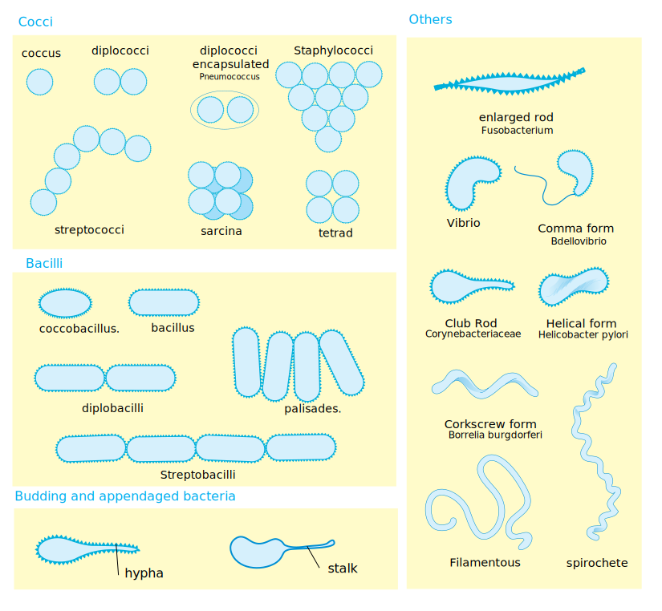
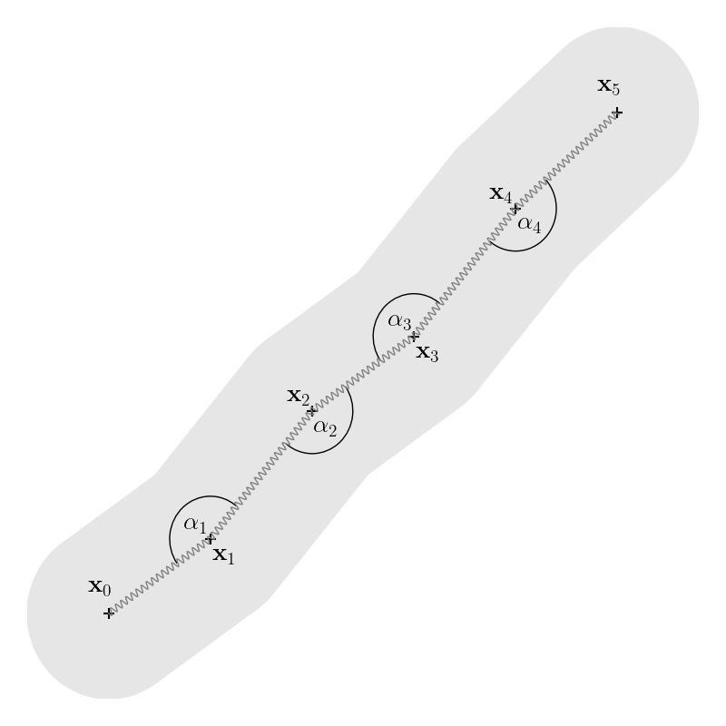
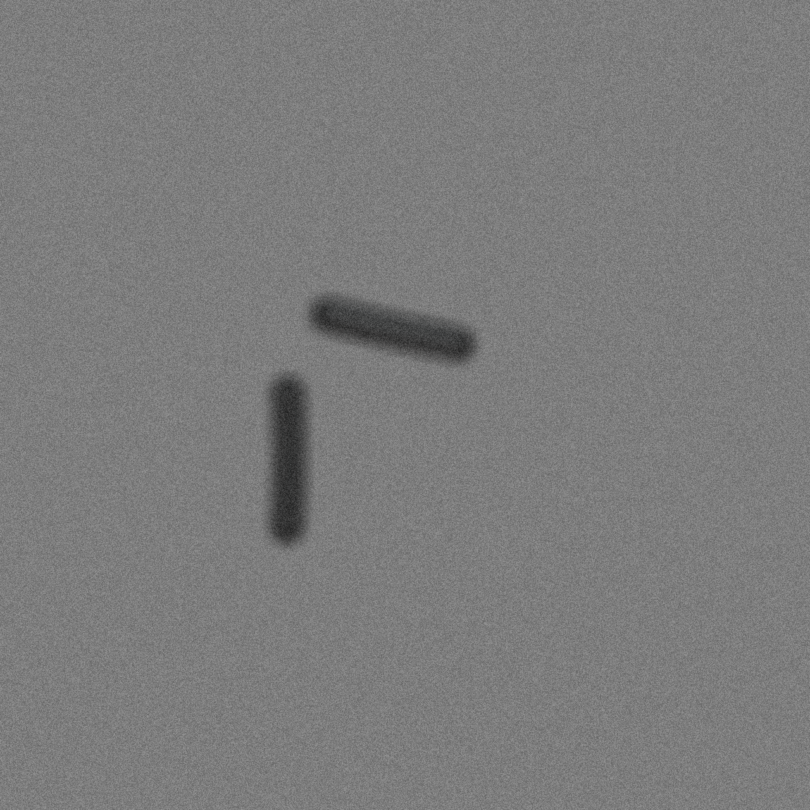
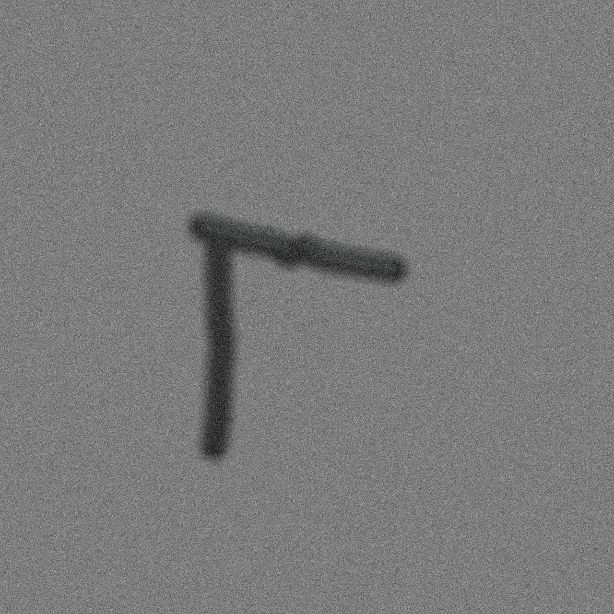
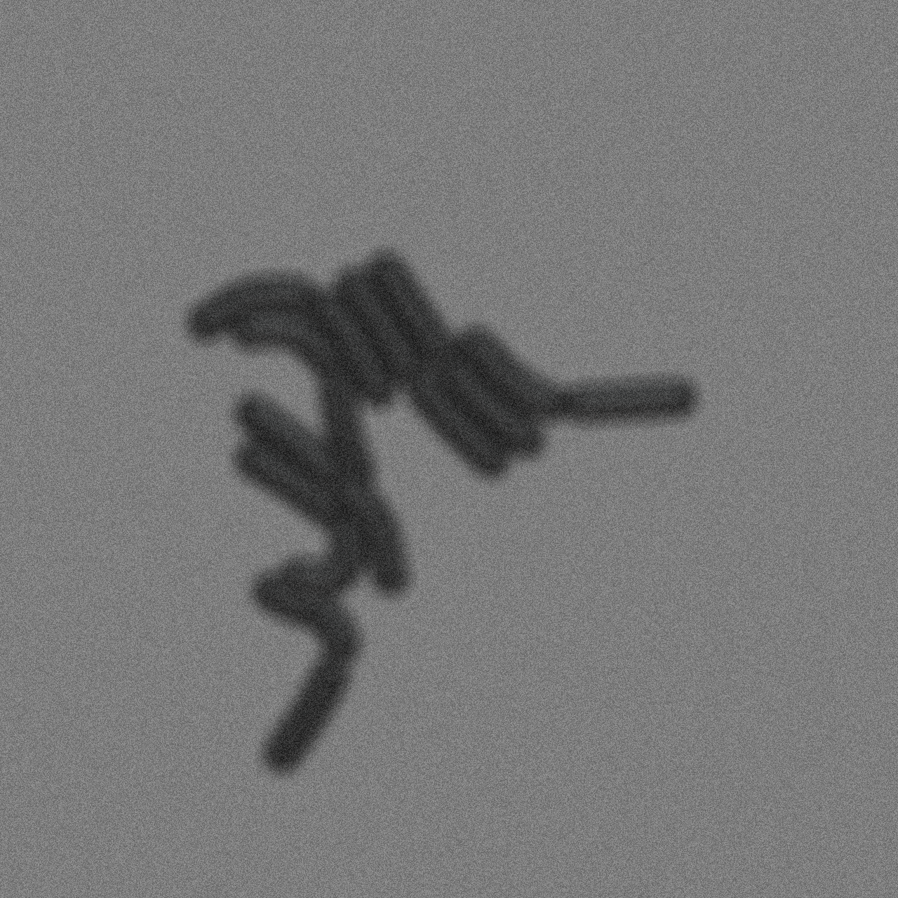
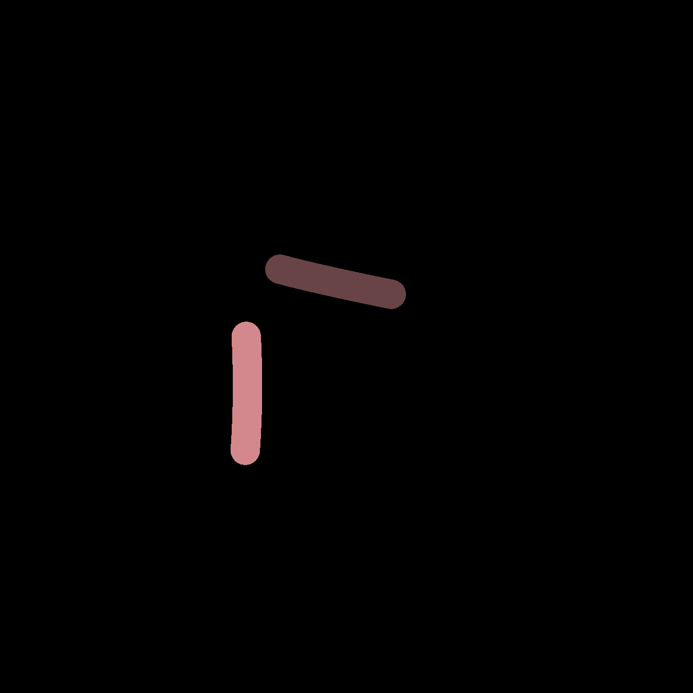
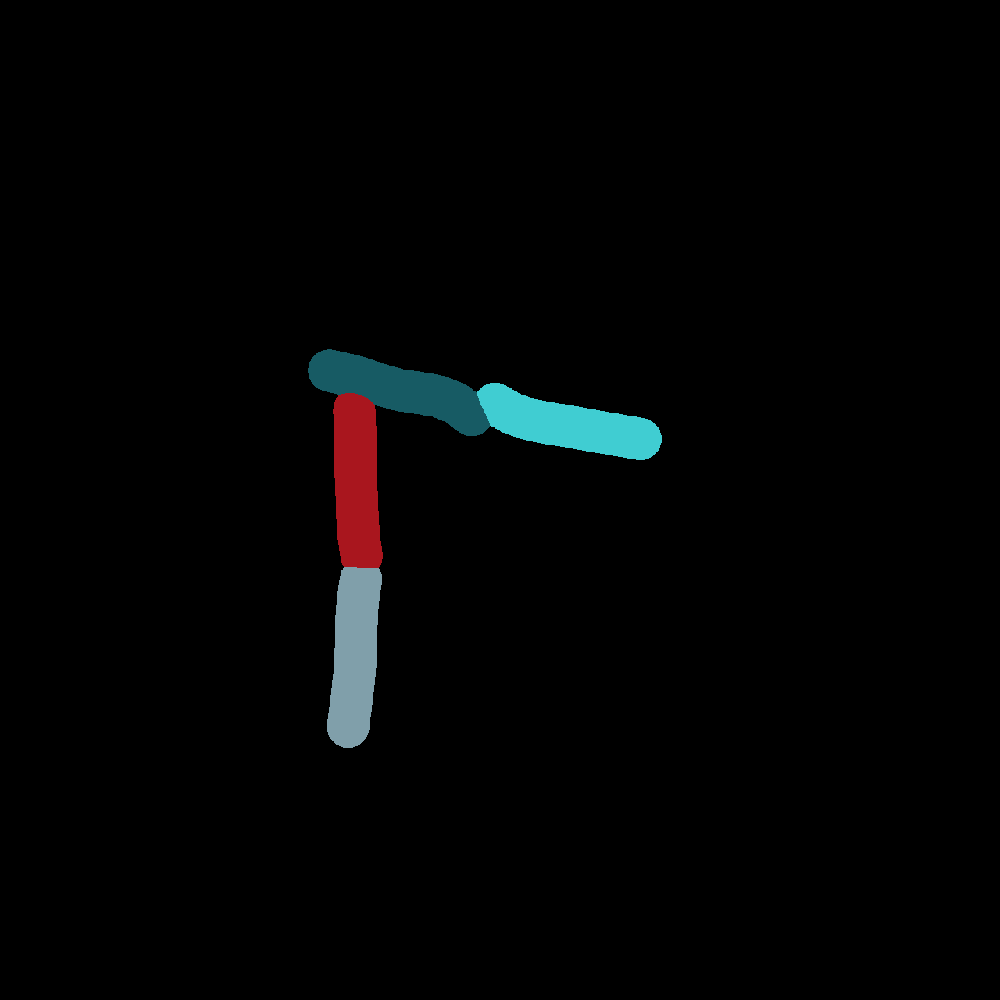
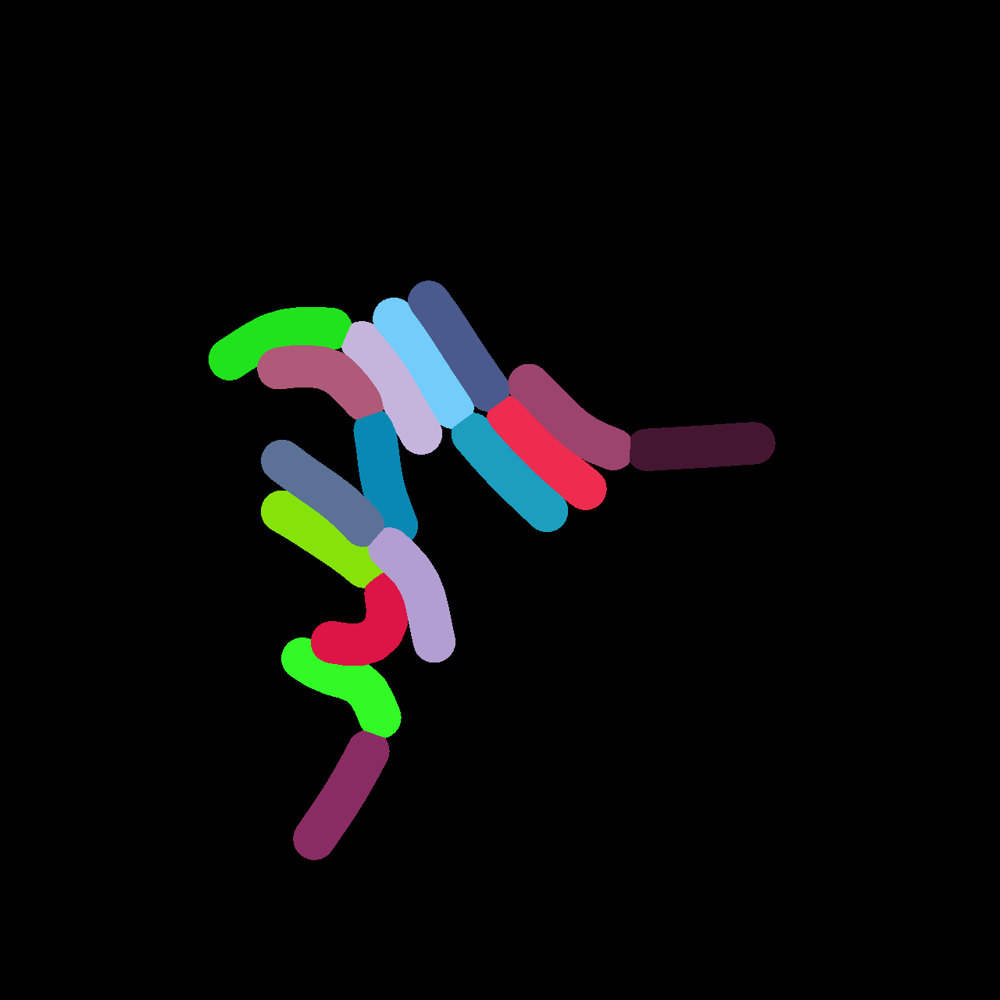

## A Mechanical Model of ## Rod-Shaped Bacteria #### Jonas Pleyer ##### 03.02.2025 --- ## Overview <!-- TODO this could be the right spot for a nice image - Biology: Rod-Shaped Bacteria - Physics: Mechanical Properties of Rods - Numerics: Agent-Based Modeling: Constructing a Model - Optimization & Parameter Estimation - Future Endeavours --> 1. Rod-Shaped Bacteria 1. Mathematical Model 2. Computational Algorithms 3. Parameter Estimation 4. Outlook
## Rod-Shaped Bacteria <div style="display: grid; grid-template-columns: 1fr 1fr;"><div> - One of many bacterial shapes<!-- .element: class="fragment" data-fragment-index="1" --> - We do not consider coccobacillus for now<!-- .element: class="fragment" --> - Length $\approx 1-10µm$, Diameter$\approx0.5-2µm$<!-- .element: class="fragment" --> - Mechanically similar to archaeon<!-- .element: class="fragment" --> </div><div class="fragment" data-fragment-index="1">  source: wikimedia.org </div> </div> --- ## Rod-Shaped Bacteria #### State of current models | ABM/Paper | | |:---|:---| | Biocellion | Only cylindrical potentials | | BSim | Support Rod-Shaped Bacteria; No parameters estimated. |
Rod-Shaped Bacteria
Motivation
## Mechanics <div style="display: grid; grid-template-columns: 1fr 1fr;"><div class="fragment" data-fragment-index="2"> $$ \vec{c}\_i = \vec{v}\_{i}-\vec{v}\_{i-1} $$ $$\\begin{align} \vec{F}\_{i,\text{springs}} = &-\gamma\left(1 - \\frac{l}{\left|\vec{c}\_i\right|}\right) \vec{c}\_i\\\\ &+ \gamma\left(1 - \\frac{l}{\left|\vec{c}\_{i+1}\right|}\right) \vec{c}\_{i+1} \\end{align}$$ </div> </div>
Mechanics
## Other relevant Effects 1 --- ## Other relevant Effects 2 --- <div style="display: grid; grid-template-columns: 45% 55%; width: 100%;"> <img src="https://cellular-raza.com/logos/cellular_raza_dark_mode.svg" style="margin: auto;" /> <h2 style="margin: auto;">Variables/Parameters</h2> <div> <div class="fragment"> ```rust [1-2|3-5|6-8|9-13|1-13] #[derive(CellAgent, Clone, Debug, Deserialize, Serialize)] pub struct RodAgent { /// Determines mechanical properties of the agent #[Mechanics] pub mechanics: RodMechanics<f32, 3>, /// Determines interaction between agents #[Interaction] pub interaction: RodInteraction<PhysicalInteraction>, /// Rate with which the cell grows pub growth_rate: f32, /// Threshold at which the cell will divide pub division_length: f32, } ``` </div> <div class="fragment"> ```rust [1-2|3-6|7-16|1-17] #[derive(Clone, Debug, PartialEq)] pub struct RodMechanics<f32, 3> { /// The current position pub pos: Matrix<f32, Dyn, Const<3>, _>, /// The current velocity pub vel: Matrix<f32, Dyn, Const<3>, _>, /// Controls stochastic motion pub diffusion_constant: f32, /// Spring tension between vertices pub spring_tension: f32, /// Stiffness between two edges pub rigidity: f32, /// Target spring length pub spring_length: f32, /// Daming constant pub damping: f32, } ``` </div> </div> <div> <div class="fragment"> | | Property | Type | | |---:|:---|:---:|:---:| | $\mu$ | Growth Rate | `f32`$\in\mathbb{R}^+$ | Fit | | $l_\text{max}$ | Division Length | `f32`$\in\mathbb{R}^+$ | Fit | | $\vec{x}_i$ | Position | `Matrix`$\in\mathbb{R}^{d\times 3}$ | I.V. | | $\vec{v}_i$ | Velocity | `Matrix`$\in\mathbb{R}^{d\times 3}$ | I.V. | | - | Diffusion | `f32`$\in\mathbb{R}^+$ | $0$ | | $l$ | Spr. Length | `f32`$\in\mathbb{R}^+$ | I.V. | | $\gamma$ | Spr. Tension | `f32`$\in\mathbb{R}^+$ | Fit | | $\eta$ | Rigidity | `f32`$\in\mathbb{R}^+$ | Fit | | $\lambda$ | Damping | `f32`$\in\mathbb{R}^+$ | Fit | </div> </div> --- ## Interaction 1: Morse-Potential \\begin{equation} V(r) = V_0\left(1 - e^{-\lambda(r-R)}\right)^2 \\end{equation} <div style="display: grid; grid-template-columns: 1fr 1fr; width: 100%;"> <div class="fragment" data-fragment-index="1"> </div> <div class="fragment" data-fragment-index="2"> | | Name | Type | | |---:|:---|:---:|:---:| | $R$ | Radius | `f32`$\in\mathbb{R}^+$ | Fit | | $\lambda$ | Stiffness | `f32`$\in\mathbb{R}^+$ | Fit | | $\zeta$ | Cutoff | `f32`$\in\mathbb{R}^+$ | Assumption | | $V_0$ | Strength | `f32`$\in\mathbb{R}^+$ | Fit | </div> </div> -- <img src="https://cellular-raza.com/logos/cellular_raza_dark_mode.svg" style="margin: auto; height: 2em" /> ```rust #[derive(Clone, Debug, Serialize, Deserialize, PartialEq)] pub struct MorsePotentialF32 { /// Radius of the object pub radius: f32, /// Defines the length for the interaction range pub potential_stiffness: f32, /// Cutoff after which the interaction is set 0 pub cutoff: f32, /// Strength of the interaction pub strength: f32, } ``` --- ## Interaction 2: Mie-Potential <div style="display: grid; grid-template-columns: 47% 53%; width: 100%;"> <div clas="fragment" data-fragment-index="3"> \\begin{equation} U(r) = C\epsilon\left[ \left(\frac{\sigma}{r}\right)^n - \left(\frac{\sigma}{r}\right)^m\right] \\end{equation} </div> <div clas="fragment" data-fragment-index="3"> \\[ C = \frac{n}{n-m}\left(\frac{n}{m}\right)^{\frac{n}{n-m}} \\] </div> <div class="fragment" data-fragment-index="1"> </div> <div class="fragment" data-fragment-index="2"> | | Name | Type | | |---:|:---|:---:|:---:| | $R$ | Radius | `f32`$\in\mathbb{R}^+$ | Fit | | $\epsilon$ | Strength | `f32`$\in\mathbb{R}^+$ | Fit | | $\beta$ | Bound | `f32`$\in\mathbb{R}^+$ | Assumption | | $\zeta$ | Cutoff | `f32`$\in\mathbb{R}^+$ | Assumption | | $n,m$ | Exponents | `f32`$\in\mathbb{R}^+$ | Fit | </div> </div> <div style="display: grid; grid-template-columns: 50% 50%; width: 100%;"> </div> -- <img src="https://cellular-raza.com/logos/cellular_raza_dark_mode.svg" style="margin: auto; height: 2em" /> ```rust #[derive(Clone, Debug, Deserialize, Serialize, PartialEq)] pub struct MiePotentialF32 { /// Interaction strength of the potential. pub radius: f32, /// Overall size of the object of the potential. pub strength: f32, /// Numerical bound of the interaction strength. pub bound: f32, /// Cutoff after which the potential will zero. pub cutoff: f32, /// Exponent $n$ of the potential pub en: f32, /// Exponent $m$ of the potential pub em: f32, } ``` --- ## Comparison of Interaction Potentials <div style="display: grid; grid-template-columns: 50% 50%; width: 100%;"> <!-- --> ### Morse ### Mie <div> - Less steep for $r\rightarrow0$ - Width of the well affects range and steepness - Less parameters </div> <div> - Can represent more types of interactions - Needs an upper bound for $r\rightarrow0$ </div> </div> --- ## Image Analysis 1 --- ## Image Analysis 2 --- ## Image Generation 1 --- ## Image Generation 2 --- ## Parameter Estimation 1 --- ## Parameter Estimation 2 --- ## Parameter Estimation 3 --- <iframe src="https://jonaspleyer.github.io/cr_mech_coli/" style="width: 1100px; height: 1080px; max-width: 100%; max-height: 100%;" ></iframe> -- <div style="display: grid; grid-template-columns: 1fr 1fr;"> ## Simple Python Script ## Results ```python [1|3-5|7-8|10-16|1-16] import cr_mech_coli as crm # Configure inputs config = crm.Configuration() agent_settings = crm.AgentSettings() # Run simulation cell_container = crm.run_simulation(config, agent_settings) # Render Images render_settings = crm.RenderSettings() crm.store_all_images( cell_container, config.domain_size, render_settings ) ``` <div>       </div> </div> --- ## Outlook - Cell Segmentation & Tracing - Cell-based Distribution of Parameters - Inheritance of Parameters